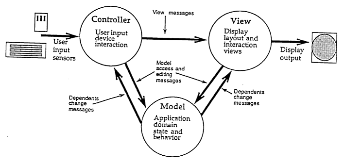

前后端分离
应用研发部 @Elf-mousE
nijun@yiban.cn
现状
WHY?
就跟为什么要代码重构一样
- 职责分离
- 对的人做对的事
- 更好的共建模式
- 快速的反应变化
探索之路

初代Web程序
<% /* ASP、JSP风格 */ %>
<? /* PHP风格 */ ?>
CMS时代
- Joomla
- Drupal
- Wordpress
<!DOCTYPE html>
<html xmlns="http://www.w3.org/1999/xhtml" <?php language_attributes(); ?>>
<head>
<meta http-equiv="Content-Type" content="<?php bloginfo('html_type'); ?>; charset=<?php bloginfo('charset'); ?>" />
<title><?php bloginfo('name'); ?> › <?php echo $title; ?></title>
后端MVC时代
- Yii
- Laravel
<html>
<head>
App Name - @yield('title')
</head>
<body>
@section('sidebar')
This is the master sidebar.
@show
@yield('content')
</body>
</html>
RESTful时代
// 查询用户
http://open.domain.com/app/getUser
// 新建用户
http://open.domain.com/app/addUser
// 更新用户
http://open.domain.com/app/updateUser
// 删除用户
http://open.domain.com/app/deleteUser
// GET: 查询用户；POST: 新建用户；PUT: 更新用户；DELETE: 删除用户
http://open.domain.com/v1/app/user
后端提供WebService，前端负责数据表现
前端MV*时代
- Angular
- React
- Vue.js
{{ message }}
<script>
new Vue({
el: '#app',
data: {
message: 'Hello Vue.js!'
}
})
</script>

分离方案
经典的后端MVC
View层谁来维护
- 前端写Demo，后端套页面
- 后端需要写HTML
- 前端仍然确认后端写的HTML
- 前端写View层，后端只管数据
- 前端需要熟悉后端语言
- 前端需要了解后端架构
分离前
PM：“我要这个功能” 后端：“这个先找前端做个模板” 前端：“模板做完了” 后端：“我来对接一下，这里样式不对” 前端：“我改完了” 后端：“功能交付” PM：“春节要加这个活动” 后端：“这个先找前端改个模板” 前端：“模板做完了” 后端：“我来对接一下，这里样式不对” 前端：“我改完了” 后端：“功能交付”
分离后
PM：“我要这个功能” 前端：“我要接口” 后端：“接口完成了” 前端：“我来对接一下，功能交付” PM：“春节要加这个活动” 前端：“需要增加接口” 后端：“接口完成了” 前端：“我来对接一下，功能交付”

后台只需提供API接口，前端调用AJAX实现数据呈现。
问题又来了
- 如何明确API
- 如何调试API
解决方案
┌ - - - - - ┐
| |
| GitServer | - - - - - - → publish to online
| |
└ - - - - - ┘
↑ | git pull
git push | | - - - - - - ┬ - - - - - - ┐
| ↓ ↓ ↓
┌ - - - - - ┐ ┌ - - - - - ┐ ┌ - - - - - ┐
| | | | | |
| Back-End | | Back-End | | DevServer |
| (Local) | | (Others) | | |
└ - - - - - ┘ └ - - - - - ┘ └ - - - - - ┘
↑ ├ - - - - - - - ┴ - - - - - ┘ ↑
balm.publish | | APIs |
| ↓ |
┌ - - - - - ┐ balm.ftp |
| | - - - - - - - - - - - - ┘
| Front-End | - - - - - - → publish to online
| (Local) | balm.zip
└ - - - - - ┘
↑ 1. npm run dev 愉快的开发
| 2. npm run prod 自动打包发布
前端主要关心的在这里
应用场景
- SPA应用
- 大多数后台应用
- 展示类网站
- 移动APP页面
优缺点及使用意义
优点
- 代码解耦
- 分工明确，提高工作效率
- 局部性能提升
- 降低维护成本
<script>
export default {
data: {
return {
lists: ['选项一', '选项二', '选项三', '选项四']
}
}，
ready: function () {
this.$http({
url: '/demo/',
method: 'POST'
})
.then(function (response) {
this.lists = response.data.lists // 获取服务器端数据并渲染
})
}
}
</script>
前后端职责清晰了
| 后端 | 前端 | |
|---|---|---|
| 服务器 | 浏览器 | |
| PHP/JAVA | NodeJS | HTML + CSS + JS |
|
|
|